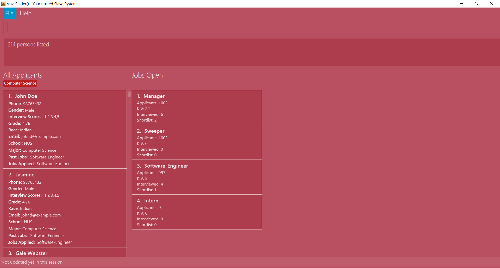

By: Team 15-3 Since: Feb 2019 Licence: MIT
1. Introduction
slaveFinder() is for those who prefer to use a desktop app for managing contacts. More importantly, social Circle is optimized for those who prefer to work with a Command Line Interface (CLI) while still having the benefits of a Graphical User Interface (GUI). If you can type fast, social Circle can get your contact management tasks done faster than traditional GUI apps. Interested? Jump to the Section 2, “Quick Start” to get started. Enjoy!
2. Quick Start
-
Ensure you have Java version
9or later installed in your Computer. -
Download the latest
addressbook.jarhere. -
Copy the file to the folder you want to use as the home folder for your Address Book.
-
Double-click the file to start the app. The GUI should appear in a few seconds.
 -
Type the command in the command box and press Enter to execute it.
e.g. typinghelpand pressing Enter will open the help window. -
Some example commands you can try:
-
list: lists all contacts -
addn/John Doe p/98765432 e/johnd@example.com a/John street, block 123, #01-01: adds a contact namedJohn Doeto the Address Book. -
delete3: deletes the 3rd contact shown in the current list -
exit: exits the app
-
-
Refer to Section 3, “Features” for details of each command.
3. Features
Command Format
-
Words in
UPPER_CASEare the parameters to be supplied by the user e.g. inadd n/NAME,NAMEis a parameter which can be used asadd n/John Doe. -
Items in square brackets are optional e.g
n/NAME [t/TAG]can be used asn/John Doe t/friendor asn/John Doe. -
Items with
… after them can be used multiple times including zero times e.g.[t/TAG]…can be used ast/friend,t/friend t/familyetc. -
Parameters can be in any order e.g. if the command specifies
n/NAME p/PHONE_NUMBER,p/PHONE_NUMBER n/NAMEis also acceptable.
3.1. Basic Command
3.1.1. Viewing help : help
Format: help
3.1.2. Adding a person: add
Adds a person to the address book
Format: add n/NAME p/PHONE_NUMBER e/EMAIL a/ADDRESS g/GENDER r/RACE m/MAJOR s/SCHOOL [pj/PAST_JOB]… [t/TAG]…
-
A person can have any number of tags (including 0)
-
A person can have any number of past jobs (including 0)
-
A person can only have "CS", "ME", "MATH", "ECON", "Computer Science" as their majors (case sensitive)
Examples:
-
add n/John Doe p/98765432 e/johnd@example.com a/John street, block 123 g/Male r/Chinese m/CS s/NUS -
add n/Betsy Crowe g/Polygender p/12345678 t/friend e/betsycrowe@example.com a/Newgate Prison r/Indian p/1234567 t/criminal m/ME s/NTU pj/Hacker
3.1.3. Listing all persons : list
Shows a list of all persons in the address book.
Format: list
3.1.4. Editing a person : edit
Edits an existing person in the address book.
Format: edit INDEX [n/NAME] [p/PHONE] [e/EMAIL] [a/ADDRESS] [g/GENDER] [r/RACE] [s/SCHOOL] [pj/PAST_JOBS] [t/TAG]…
Examples:
-
edit 1 p/91234567 e/johndoe@example.com
Edits the phone number and email address of the 1st person to be91234567andjohndoe@example.comrespectively. -
edit 2 n/Betsy Crower t/
Edits the name of the 2nd person to beBetsy Crowerand clears all existing tags. ==== Listing entered commands :history
Lists all the commands that you have entered in reverse chronological order.
Format: history
|
Pressing the ↑ and ↓ arrows will display the previous and next input respectively in the command box. |
3.1.5. Undoing previous command : undo
Restores the address book to the state before the previous undoable command was executed.
Format: undo
|
Undoable commands: those commands that modify the address book’s content ( |
Examples:
-
delete 1
list
undo(reverses thedelete 1command) -
select 1
list
undo
Theundocommand fails as there are no undoable commands executed previously. -
delete 1
clear
undo(reverses theclearcommand)
undo(reverses thedelete 1command)
3.1.6. Redoing the previously undone command : redo
Reverses the most recent undo command.
Format: redo
Examples:
-
delete 1
undo(reverses thedelete 1command)
redo(reapplies thedelete 1command) -
delete 1
redo
Theredocommand fails as there are noundocommands executed previously. -
delete 1
clear
undo(reverses theclearcommand)
undo(reverses thedelete 1command)
redo(reapplies thedelete 1command)
redo(reapplies theclearcommand)
==== Locating persons by name:find
Finds persons whose names contain any of the given keywords.
Format: find KEYWORD [MORE_KEYWORDS]
Examples:
-
find John
ReturnsjohnandJohn Doe -
find Betsy Tim John
Returns any person having namesBetsy,Tim, orJohn
3.1.7. Searching persons by personal information: search
Search persons whose personal information exactly to the given keywords in the specific fields.
Format: search [n/NAME] [p/PHONE] [e/EMAIL] [a/ADDRESS] [g/GENDER] [r/RACE] [s/SCHOOL] [pj/PAST_JOBS] [t/TAG]…
Examples:
-
search m/CS
Returns people whose major isCS -
search m/CS s/NUS
Returns any person whose major isCSand school isNUS
3.1.8. Adding tags base on personal information : addtag
Adds tag for people by their personal information.
Format: addtag TAGNAME [p/PHONE] [e/EMAIL] [a/ADDRESS] [c/COMPANY] [mo/MOUDLE]
Examples:
-
addtag CS m/CSAdd CS tag for all people whose major isCS. -
addtag Assignment t/friend m/CSAddAssignmenttag for all people whose major isCSand have tagfriend.
3.1.9. Deleting a person : delete
Deletes the specified person from the address book.
Format: delete INDEX
Examples:
-
list
delete 2
Deletes the 2nd person in the address book. -
find Betsy
delete 1
Deletes the 1st person in the results of thefindcommand.
3.1.10. Selecting a person : select
Selects the person identified by the index number used in the displayed person list.
Format: select INDEX
Examples:
-
list
select 2
Selects the 2nd person in the address book. -
find Betsy
select 1
Selects the 1st person in the results of thefindcommand.
3.1.11. Clearing all entries : clear
Clears all entries from the address book.
Format: clear
3.1.12. Exiting the program : exit
Exits the program.
Format: exit
3.1.13. Saving the data
Address book data are saved in the hard disk automatically after any command that changes the data.
There is no need to save manually.
3.2. HR Related Features
3.2.1. Import Resumes to slaveFinder() : importResumes Coming in v1.4
Given input resume txt files in placed in the resumes folder, reads all the resumes and saves them into slaveFinder().
Format : readAll
3.2.2. Create a Job Hiring Process: createjob Coming in v1.4
Create a Job hiring process with three person lists: "Applied", "Interview", "To be sent to boss".
Format : createjob JOBNAME
3.2.3. Switch a Job Hiring Process: switchjob Coming in v1.4
Switch to another Job Hiring Process.
Format : switchjob JOBNAME
3.2.4. Filter search results : filter Coming in v1.4
Filter the people displayed on the Person List. Each filer has a name and can be delete, diplay result always base on all filter request.
Format: filter FILTERNAME [n/NAME] [p/PHONE] [e/EMAIL] [a/ADDRESS] [g/GENDER] [r/RACE] [s/SCHOOL] [pj/PAST_JOBS] [t/TAG]…
3.2.5. Delete a filter : deletefilter Coming in v1.4
Delete a filter showing on the display board and renew the update display people list.
Format: deletefilter FILTERNAME1 FILTERNAME2…
3.2.6. Get ranked list : rank Coming in v1.4
Rank the people displayed on the Person List base on their information like Name or Grade. Each rank command has a name and priority and can be delete, diplay result always base on all filter request.
Format : rank
3.2.7. Delete a rank command : deleterank Coming in v1.4
Delete a rank command showing on the display board and renew the update display people list.
Format: deleterank RANKNAME1 RANKNAME2…
3.2.8. Display Analytics : displayAnalytics Coming in v1.4
Display the analytics of applicants on the display person borad
Format : displayAnalytics
3.2.9. Select people into "Interview" List: selectInterview Coming in v1.4
Select people from display board to the Job Hiring Process’s "Interviewed" list
Format : selectInterview [INDEX] [INDEX-INDEX] [all]
Examples:
-
selectInterview 2-10
Selects the 2nd person to 10th people to the "Interview" list. -
selectInterview 2 4Selects the 2nd person and 4th people to the "Interview" list. -
selectInterview allSelects all the people on the Person Display List to the "Interview" list.
3.2.10. Select people into "To be sent to boss" List: selectfinal Coming in v1.4
Select people from display board to the Job Hiring Process’s "To be sent to boss" List
Format : selectInterview [INDEX] [INDEX-INDEX] [all]
3.2.11. Arrange Interview Dates : arrangeInterview Coming in v1.4
Arrange interview dates for applicants in the Job Hiring Process’s "Interview" list
sends the applicants their respective interview timings to the email they provided.
Format : arrangeInterviews JOBNAME
3.2.12. Generate a final report for the Job Hiring Process : report Coming in v1.4
Generate report.txt to show 3 categories of applicants for a specific role:
"Applied", "Interview", "To be sent to boss". in a Job Hiring Process.
Format : report JOBNAME
3.2.13. Delete the Job Hiring Process : deletejob Coming in v1.4
Delete a Job Hiring Process and all its information
Format : deletejob JOBNAME
4. FAQ
Q: How do I transfer my data to another Computer?
A: Install the app in the other computer and overwrite the empty data file it creates with the file that contains the data of your previous Address Book folder.
5. Command Summary
-
Add
add n/NAME p/PHONE_NUMBER e/EMAIL a/ADDRESS g/GENDER r/RACE m/MAJOR s/SCHOOL [pj/PAST_JOB]… [t/TAG]…
e.g.add n/James Ho p/22224444 e/jamesho@example.com a/123, Clementi Rd, 1234665 g/Male r/Chinese m/MATH s/NUS pj/Professor t/friend t/colleague -
Clear :
clear -
Delete :
delete INDEX
e.g.delete 3 -
Edit :
edit INDEX [n/NAME] [p/PHONE] [e/EMAIL] [a/ADDRESS] [g/GENDER] [r/RACE] [s/SCHOOL] [pj/PAST_JOBS] [t/TAG]…
e.g.edit 2 n/James Lee e/jameslee@example.com -
Find :
find KEYWORD [MORE_KEYWORDS]
e.g.find James Jake -
Search :
search [n/NAME] [p/PHONE] [e/EMAIL] [a/ADDRESS] [g/GENDER] [r/RACE] [s/SCHOOL] [pj/PAST_JOBS] [t/TAG]…
e.g.search s/NUS -
List :
list -
Help :
help -
Select :
select INDEX
e.g.select 2 -
History :
history -
Undo :
undo -
Redo :
redo -
Arrange Interviews :
arrangeInterviews -
Read to slaveFinder() :
readAll -
Get ranked list :
getRankedList -
Filter search results :
filter [n/NAME] [p/PHONE] [e/EMAIL] [a/ADDRESS] [g/GENDER] [r/RACE] [s/SCHOOL] [pj/PAST_JOBS] [t/TAG]…
e.g.filter r/Chinese -
Display Hiring Process :
displayProcess -
Display Analytics :
displayAnalytics